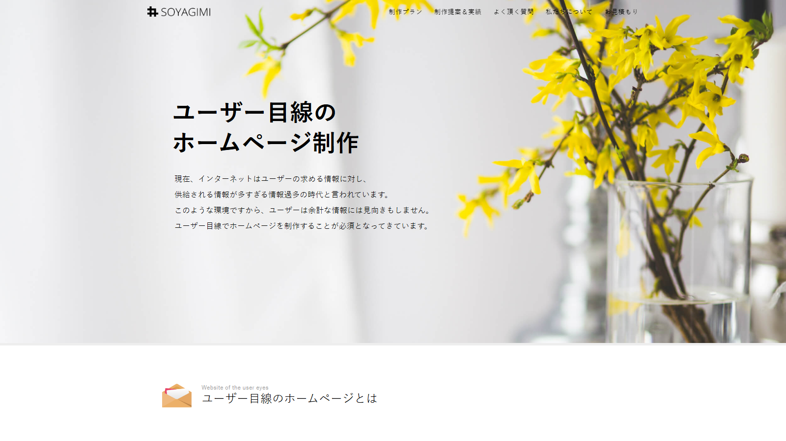
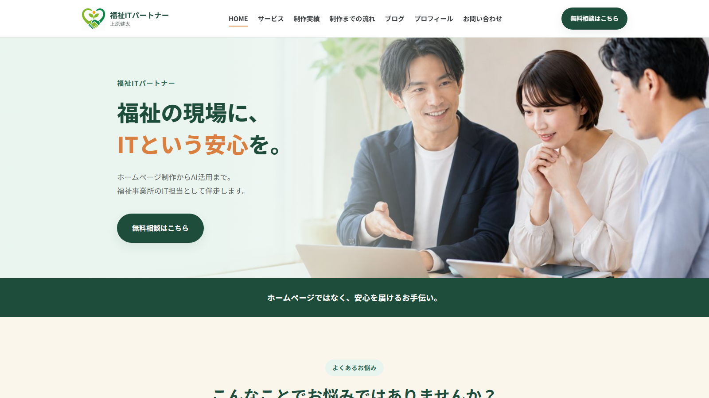
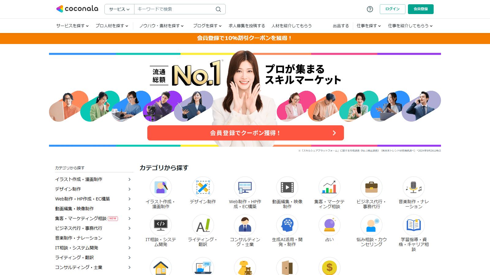

福祉事業所のホームページ制作サービスは、費用だけでなく、福祉への理解、デザイン、相談のしやすさ、公開後の支援内容にも違いがあります。
費用を抑えたい方、短期間で作りたい方、デザインや集客まで任せたい方など、重視するポイントによって適した依頼先は異なります。
まずは比較表と目的別おすすめから、ご自身に合う選択肢をご確認ください。
目次
まずは4社の特徴を一覧で比較できます。詳しい説明は後半でご紹介します。
| 比較項目 | SOYAGIMIテンプレート型 | tomonico高品質・総合支援型 | 福祉ITパートナー福祉特化型 | ココナラスキル販売・個人制作者 |
|---|---|---|---|---|
| 費用 | ○ | △ | ◎ | △～◎ |
| 福祉理解 | △ | ○ | ◎ | △ |
| デザイン品質 | △ | ◎ | △ | △～○ |
| 相談しやすさ | △ | ◎ | ◎ | ○ |
| 公開後支援 | ○ | ◎ | ○ | △ |
| こんな方におすすめ | 費用を抑えて、シンプルなホームページを作りたい方 | デザインや集客、公開後の運用まで任せたい方 | 福祉への理解と相談しやすさを重視し、費用も抑えたい方 | 多くの出品者から、予算や好みに合う制作者を選びたい方 |
「費用」は◎に近いほど費用を抑えやすく、△や×に近いほど高額になりやすいことを表しています。
SOYAGIMI

公式サイトを見る ↗既存のデザインや基本構成を活用することで、制作費を抑えながらホームページを開設できるタイプです。SOYAGIMIでは、小規模事業者向けに月額5,500円からのプランを提供しており、自分で更新できる仕組みやスマートフォン表示にも対応しています。
追加機能やオーダーメイド対応により、別途費用がかかる場合があります。
メリット
- 初期費用や制作費を抑えやすい
- 基本構成が決まっており、進めやすい
- サーバー管理や公開後の運用を任せやすい
注意点
- デザインや構成の自由度には制限がある
- 福祉事業への理解は依頼先によって異なる
- 長期間利用すると月額料金の総額が大きくなる
こんな方におすすめ
費用を抑えながら、必要な情報を掲載したシンプルなホームページを作りたい方
tomonico
 公式サイトを見る ↗
公式サイトを見る ↗
デザインだけでなく、サイト構成や文章作成、公開後の更新までまとめて相談できるタイプです。tomonicoは障害福祉事業所向けの制作に対応し、7ページ以内の場合は初期費用0円、月額8,900円から依頼できます。
7ページ以内の場合の目安です。内容や機能によって追加費用がかかる場合があります。
メリット
- 構成、デザイン、文章作成まで任せられる
- 障害福祉事業所の制作実績がある
- 公開後の文章修正や写真差し替えを依頼できる
- Web担当者がいなくても運用しやすい
注意点
- 利用期間中は月額料金が継続する
- 長期間利用すると総額が大きくなる
- 自分で更新したい場合は運用方法の確認が必要
こんな方におすすめ
福祉への理解に加えて、制作から公開後の更新まで継続的に任せたい方
福祉ITパートナー

公式サイトを見る ↗福祉業界への理解と相談のしやすさを重視しながら、制作費を抑えられるタイプです。精神保健福祉士の資格を持つ担当者が、事業所の特徴や利用者、ご家族への伝わり方を確認しながらホームページを制作します。
制作費、ドメイン取得代行、公開・独自ドメイン接続設定、独自ドメイン実費を含む目安です。
サーバーは無料の公開環境を利用する想定です。任意の月額サポートは含みません。
メリット
- 福祉制度や事業所運営への理解がある
- 専門用語をかみ砕いて相談しやすい
- 月額料金なしでも利用できる
- 小規模な福祉事業所や団体にも依頼しやすい
- 事業所ごとに構成やデザインを調整できる
注意点
- 大規模サイトや高度な機能には向かない場合がある
- 集客施策や継続支援は対応範囲の確認が必要
- 制作内容によって追加費用が発生する場合がある
こんな方におすすめ
福祉を理解した相手に相談しながら、必要十分なホームページを低予算で作りたい方
ココナラ

公式サイトを見る ↗多数の出品者から、予算やデザインの好みに合う制作者を自分で選べるサービスです。料金、得意分野、対応範囲は出品者によって異なり、実績や口コミを確認しながら比較できます。
WordPressで制作する場合は、制作費のほかにレンタルサーバー代、独自ドメイン代などが必要です。
サーバー契約の特典により、ドメイン代が無料になる場合もあります。
メリット
- 多くの出品者から比較して選べる
- 低価格のサービスを見つけやすい
- 希望するデザインやツールから探せる
- 口コミや過去の制作実績を確認できる
注意点
- 制作者によって品質や対応範囲に差がある
- 福祉事業への理解は依頼前の確認が必要
- 修正回数や公開後の支援内容を確認する必要がある
- 依頼内容や制作者選びを自分で行う必要がある
こんな方におすすめ
複数の制作者を比較し、予算や好みに合う相手を自分で選びたい方
総額、納期、月額料金など、依頼前に確認しておきたい項目をまとめました。
| 比較項目 | SOYAGIMIテンプレート型 | tomonico高品質・総合支援型 | 福祉ITパートナー福祉特化型 | ココナラスキル販売・個人制作者 |
|---|---|---|---|---|
| 1年目総額の目安 | 66,000円～ | 106,800円～ | 約31,000～34,000円 | 30,000～500,000円程度 |
| 納期の目安 | 要相談 | 要相談 | 約14日・最短48時間 | 3日～1か月程度 |
| 月額料金 | あり | あり | 任意 | 出品者による |
| ドメイン・サーバー対応 | プランによる | 対応あり | 取得代行・公開設定に対応 | 出品者による |
| 原稿・写真の準備支援 | 限定的 | 手厚い | 相談しながら対応 | 出品者による |
| 修正・更新対応 | プラン内の場合あり | 月額料金内で対応 | 月額サポートで対応 | 出品者による |
| 公開後の保守・相談 | ○ | ◎ | ○ | △～○ |
| デザインの自由度 | 低め | 高い | 高い | 制作者による |
※1年目総額は基本的なプランを基にした目安です。追加ページ、独自機能、公開作業、サーバー、ドメイン、保守内容などにより変動します。
※納期は、原稿や写真の準備状況、ページ数、修正回数などによって変動します。
1年目の総額で比較する
制作費だけでなく、月額料金、サーバー、ドメイン、公開作業、保守費用まで含めて確認する。
福祉事業への理解があるか確認する
制度や対象者への理解があると、事業内容や支援の特徴を伝えやすい。
公開後の更新・保守内容を確認する
文章修正、写真差し替え、トラブル対応など、どこまで料金に含まれるか確認する。
デザインと相談のしやすさを見る
見た目だけでなく、要望を伝えやすく、相談しながら進められるかも確認する。
福祉事業所のホームページ制作は、料金の安さだけでなく、福祉への理解、デザインの自由度、相談のしやすさ、公開後の支援内容まで含めて比較することが大切です。
短期間でシンプルに作りたい場合はテンプレート型、デザインや運用まで任せたい場合は総合支援型、福祉への理解と費用のバランスを重視する場合は福祉特化型、幅広い制作者から自分で選びたい場合はココナラが候補になります。
まずは1年目の総額と、どこまで対応してもらえるかを確認し、自分たちの事業所に合った依頼先を選びましょう。
本記事の比較について

本記事は、福祉事業所向けのホームページ制作を行う「福祉ITパートナー」が作成しています。
自社サービスを含む各社について、2026年7月時点の公式サイトに掲載された情報をもとに、料金や特徴を比較しています。
料金やサービス内容は、各社の都合により変更される場合があります。
最新の料金や対応内容については、各社の公式サイトで直接ご確認ください。